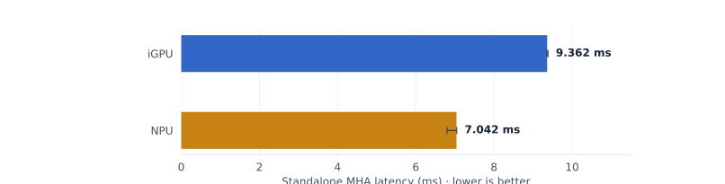
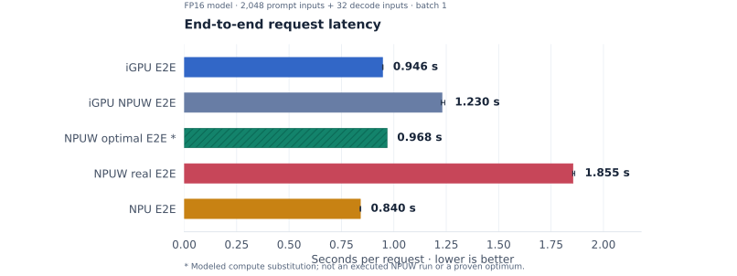
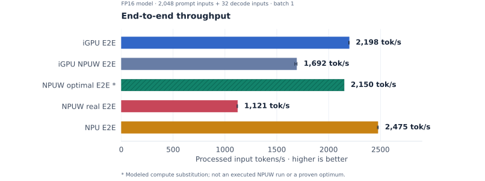
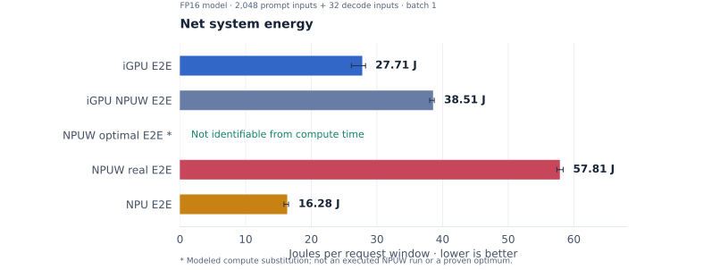
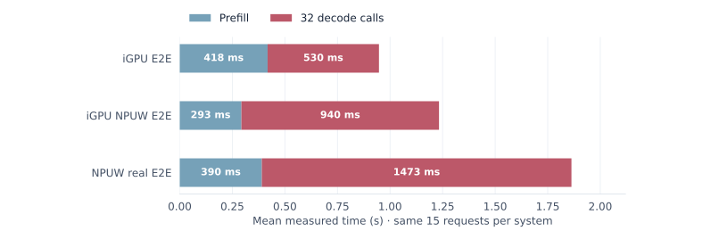

The validated NPU winning case
FP16 multi-head attention (MHA), prefill at 2K context. This standalone block includes attention, the output projection, and the residual addition. Both backends execute the same graph; the projection is also exposed for correctness checking.
NPU speedup over iGPU
7.042 ms versus 9.362 ms. Compilation and warm-up excluded.

Only this validated winning case is shown. The isolated projection passes the specified CPU-reference gate at 2K; the NPU results at 4K and above did not establish a valid affinity.
Why this operator shape suits the NPU
Prefill computes attention for many queries at once. At this shape, there is enough independent matrix work to distribute across the NPU’s three clusters, with softmax work overlapping the matrix operations.
QKᵀ: [14, 2048, 2048] → softmax → AV → output projection
iGPU: a sequence of kernels
The standalone graph compiles into separate QK matrix multiplication, softmax, AV matrix multiplication, and projection kernels. Their median profiled times are 1.748 + 2.963 + 2.637 + 0.217 ms—92.4% of the summed device profile.
A score or probability tensor has 112 MiB of FP16 elements. Separating these steps exposes a large intermediate; actual DRAM traffic was not measured.
NPU: tiled work across engines
The matrix engines (DPU) calculate QK and AV tiles. The vector engines (SHAVE) perform softmax. The task timeline shows work on all three clusters and 1.566 ms of DPU–SHAVE overlap: one tile can be normalized while another is being multiplied.
This supports tiling and overlap as contributors to the win. It does not isolate their individual speedup or establish a peak-hardware advantage.
IndirectSDPA plus output projection averages 3.404 ms/layer. The isolated NPU compute proxy is 4.289 ms/layer. The standalone win therefore does not by itself predict an E2E win.The microbenchmark uses random inputs and dense attention without a causal mask; the full model uses causal attention and a KV cache. These are different compiled workloads. The evidence establishes the two execution paths, but does not prove that the projection boundary alone caused the difference.
The five end-to-end comparisons
One request = 2,048 prompt inputs + 32 fixed decode inputs, batch 1. All four measured series come from the same audited campaign and runtime. The hatched bar asks what the selected NPU offload could cost with zero added switching and wrapper overhead.
iGPU NPUW runs all partitions on iGPU. NPUW real offloads prefill attention to NPU, with all decode on iGPU. The native NPU E2E path also uses NPUW internally.



| System | Request s ↓ | Input tok/s ↑ | System J ↓ | Evidence |
|---|---|---|---|---|
| iGPU E2E | 0.9464 | 2,197.8 | 27.71 | measured |
| iGPU NPUW E2E | 1.2297 | 1,691.5 | 38.51 | measured |
| NPUW optimal E2E* | 0.9677 | 2,149.5 | — | modeled |
| NPUW real E2E | 1.8547 | 1,121.5 | 57.81 | measured |
| NPU E2E | 0.8403 | 2,475.2 | 16.28 | measured |
What each bar means
| Series | Execution |
|---|---|
| iGPU E2E | Native fused full-model iGPU path. |
| iGPU NPUW E2E | NPUW transforms and partitions the model; all partitions run on iGPU. |
| NPUW optimal E2E* | Modeled ideal offload; replaces MHA compute in the fused iGPU baseline. |
| NPUW real E2E | Prefill SDPA partitions on NPU; remaining prefill and all decode on iGPU. |
| NPU E2E | Native NPU full-model path, which also uses NPUW internally. |
The modeled “optimal” bar
The estimate keeps the rest of the measured iGPU request unchanged, removes its profiled MHA + output-projection time, and substitutes NPU DPU/SHAVE task time with overlaps counted once. Added synchronization, tensor handoff, explicit DMA, and NPUW overhead are set to zero. It is 2.24% slower than the iGPU baseline under these assumptions.
*“Optimal” is an idealized fixed-offload scenario, not a measured run or a proven optimum. The proxy uses isolated full-2K dense attention and includes output projection; actual NPUW offloads SDPA and keeps projection on iGPU. Causal masking, chunking, and internal data handling differ. If routing can choose either device, this estimate would retain the fused iGPU MHA.
Measured outcome: the native NPU model is fastest and uses the least system energy in this comparison. Fine-grained hybrid execution is slower than either native backend.
How NPUW switches—and where time grows
NPUW means NPU Wrapper. It is OpenVINO software that prepares separate device programs, connects their tensors, and runs them in dependency order. A “switch” occurs when the next program belongs to another device.
- Compile and assign. NPUW makes static prefill and generate graphs, partitions them, and compiles each partition for its assigned device. Repeated layers reuse the same compiled body with different tensors.
- Bind and submit. The producer’s
get_tensor()supplies the consumer’sset_tensor(). NPUW callsstart_async()for the current partition and can prepare the next inputs on the CPU. - Wait, then consume.
wait()ensures the producer has finished before the dependent partition uses its result. The receiving plugin handles compatible buffers and any required import, copy, or layout conversion. - Keep the KV cache alive. The internal graph exposes cache inputs and outputs, but the request remains stateful. NPUW transfers prefill K/V into generate storage, then updates the stored slices after each decode step.
Shared DRAM does not guarantee a free handoff: programs still need compatible tensor storage and completion signals. There are 24 attention visits and 48 logical device boundaries per prefill chunk. The number of chunks depends on the compiled configuration; these are graph counts, not measured hardware submissions.
Follow the implementation in OpenVINO
compile_model → NPUW → static prefill / generate → device submodels producer.get_tensor() → consumer.set_tensor() current.start_async() → prepare next inputs → current.wait() next device subrequest executes prefill ends → copy_kvcache() decode step ends → update_kvcache_for()
Source snapshot 57b3b5a; the experiment uses OpenVINO 2026.3. These links document the mechanism, not individual latency measurements.
Measured dominant effect: slower decode

84.6% of the hybrid’s extra time occurs in decode.
Compared with NPUW all-iGPU, the hybrid adds 629.9 ms/request: 532.8 ms in decode, 97.1 ms in prefill, and 0.063 ms in the outer request loop. An explicit all-iGPU generate mapping also reproduced the slow decode.
The all-iGPU NPUW control already adds about 286 ms to mean request time relative to native iGPU: prefill becomes faster, but decode becomes slower. The mixed-device policy adds another 630 ms. This places the dominant measured regression in the decode execution/state path, even though NPU attention is used only during prefill.
wait() includes useful device work, and hybrid minus all-iGPU time is not a measurement of pure switching cost.Measurement scope and reproducibility
Operator: September 7, OpenVINO 2026.3, three independent processes × 21 trials. Projection and residual are checked separately; the 2K acceptance gate is cosine ≥ 0.999 and relative L2 ≤ 2%. The NPU projection error is about 1.30%. Subsequent GPU profiles and NPU task traces explain the compiled paths, rather than replacing clean wall timing.
E2E: the audited September 4 campaign supplies all four measured systems: 3 processes × 5 complete timed requests each, after complete-request warm-up. The FP16 IR uses default GPU inference-precision policy; the label does not prove every internal instruction is FP16. NPU maximum prompt length is 2,048 and 32 decode calls are completed. The tests use fixed input tokens, not sampled text generation. Final-step logits pass the recorded agreement gate; this is not all-position or language-quality validation.
Latency and energy: compilation, warm-up, state reset, tokenization, sampling and output summaries are outside request latency. Energy uses separate 5-request windows with reset and output-summary CPU work included; system idle subtraction is 8.617 W. Energy therefore covers a slightly larger scope than the latency timer. Error bars are ranges across three process medians (energy: process means), not confidence intervals.
Model: the 0.967653 s estimate uses September 7 compute profiles and the audited iGPU anchor. It is an assumption-based substitution, not a globally optimal placement or an NPUW performance measurement. Energy is intentionally unavailable for that row.
{kind=link}
{kind=link}